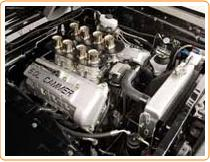

Model T Ford Engine
The Ford Model T engine was a 2.9L four-cylinder engine.
It primarily ran on petrol, but could also use other fuels such as ethanol.
The top speed attained was about 40 mph, and was about 20 horse-power.
Production of the engine was continuous from 1908 until 1941. After Ford stopped building the Model T in 1927, the engine was produced for commercial markets. It remained almost unchanged during that period. Starting was by hand-crank, for example.
One interesting fact: the price of a Model T Ford in 1927 (the whole car) was about $260. This translates to about $3000 in modern terms, according to one source.
Jaguar XK6 Engine
The Jaguar XK6 engine six-cylinder engine is, by common consent, a classic design. The success of Jaguar depends largely on the reputation of this engine.
It was produced continuously from 1949 until 1992, even surviving the era of electronic fuel injection.
It was designed by Sir William Lyons and his team of designers consisting of William Heynes (the chief designer), Walter Hassan and Claude Baily.
The Jaguar XJ used a 2.8L version of this engine
Aston Martin Engine
The Aston Martin Vanquish is powered by a forty-eight valve V12 engine, which produces about 450 horse power.
This engine was originally designed by David Brown and W.O Bentley, and established the racing pedigree of the Aston Martin firm.
It was largely responsible for the company re-entering the Le Mans 24-hour race in 2009.
The first Aston Martin car contained a four-cylinder Coventry-Simplex engine.
Silver Shadow V8 Engine
All Silver Shadows contain a V8 engine. At first the capacity was 6230cc, but this was later increaed to 6750cc
A V8 engine is a V-engine with eight cylinders mounted on the crankcase, and all eight pistons drive a common crankcase.
The V8 originated in France, but the first commerically produced engines with eight cylinders on a V-shaped crankcase were produced by Cadillac in the USA, around 1900.
Ford Mustang V8 Engine
The Ford Mustang was also powered by a  V8 engine, and is considered one of the reasons this car was such a success. The Mustang was designed as a sports car coupé, the so-called "pony car", and which inspired many competitors.
It was, however, the power of the V8 engine, for the first time in a sylish car available at a reasonably price, which greatly contributed to the success of this car.
As discussed elsewhere on this site, the famous car chase in the film Bullitt (Starring Steve McQueen) was also a major success factor, and is responsible for the position the car holds in popular culture.